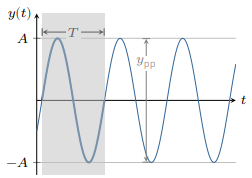
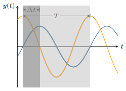
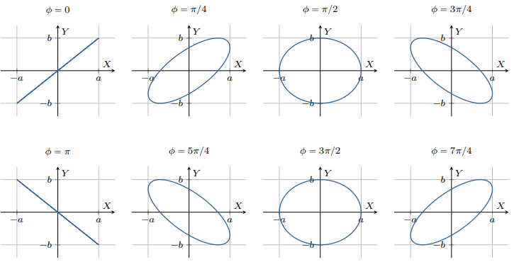
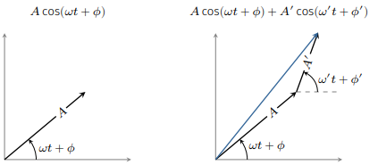
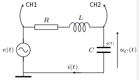
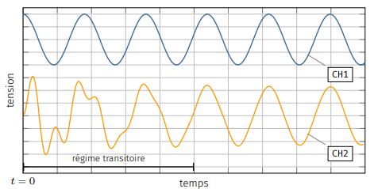
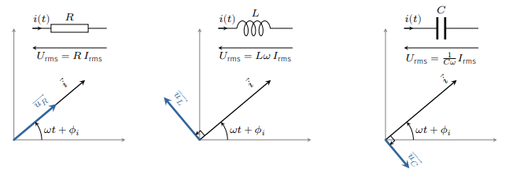

On étudie dans ce cours les circuits électriques linéaires en régime sinusoïdal forcé. Dans
ce cas, il est intéressant d’introduire le concept d’impédance complexe. Les lois de
l’électricité se transforment alors en équations algébriques simples à résoudre.
Signaux périodiques
Généralités sur les signaux périodiques
Période
Un signal temporel \(y(t)\) constitué par un motif de durée \(T\) qui se répète à
l’identique, est dit périodique, et \(T\) représente la période du signal. Mathématiquement,
le signal vérifie :
$$
\quad y(t) = y(t+T) \ \forall t
$$
Il est facile de voir que si \(T\) est une période, alors \(2T\) l’est également. C’est
pourquoi, par convention, la période est la plus petite valeur possible de \(T\) telle que
\(y(t) = y(t+T) \quad \forall t\).
Fréquence
Le nombre \(\nu\) de périodes dans une seconde s’appelle la fréquence et s’exprime en hertz
(Hz) :
$$
\quad \boxed{ \nu = \frac{1}{T} }
$$
Grandeurs
Les appareils de mesure électrique (voltmètre, ampèremètre, oscilloscope, etc.) permettent
d’accéder à différentes grandeurs.
Moyenne
La valeur continue représente la grandeur moyenne du signal :
$$
\quad \bar{y} = \frac{1}{T} \int_0^T y(t)\mathrm{d}t
$$
Valeur crête-à-crête
La valeur crête-à-crête correspond à l’écart entre la valeur maximum et la valeur
minimum :
$$
\quad y_{pp} = \max(y) - \min(y)
$$
Valeur efficace
La valeur efficace ou valeur RMS (Root Mean Square) représente la racine de la moyenne du
carré du signal :
$$
\quad y_{rms} = \sqrt{\overline{y^2}}
$$
La valeur efficace d’un courant ou d’une tension variables au cours du temps correspond à la
valeur d’un courant continu ou d’une tension continue qui produirait un échauffement
identique dans une résistance.
Décomposition de Fourier
Dans la suite, on se limite aux signaux sinusoïdaux. En effet, le théorème de Fourier
stipule ( sous certaines conditions mathématiques peu restrictives en électricité) qu’un
signal périodique de fréquence \(\nu\) se décompose, en sinus et cosinus de fréquences
multiples de la fréquence \(\nu\) :
$$
\quad y(t) = a_0 + \sum_{k=1}^{\infty} a_k\cos(2\pi k \nu t) + b_k\sin(2\pi k \nu t)
$$
où \(a_0\) représente la valeur moyenne (sa composante continue) et
\(a_k\cos(2\pi k \nu t) + b_k\sin(2\pi k \nu t)\) la \(k^e\) harmonique.
Si l’on connait tous les coefficients \(a_k\) et \(b_k\), appelés coefficients de Fourier,
on peut reconstruire complètement le signal périodique. Or, puisque l’on étudie des réseaux
linéaires, si l’on connaît leur comportement vis à vis d’un signal sinusoïdal quelconque, on
est capable de connaître, par combinaison linéaire, la réponse vis à vis de n’importe quelle
signal périodique, ce qui justifie l’étude de la réponse en régime sinusoïdal.
Le signal sinusoïdal
Un signal sinusoïdal \(y(t)\) s’exprime par :
$$
\quad y(t) = A\cos(\omega t + \phi)
$$
\(A\) désigne l’amplitude.
\(\phi\) désigne la phase (en radian).
\(\omega\) désigne la pulsation (en \(rad/s\)).

Signal sinusoïdal.
La période \(T\) d’un tel signal est la solution de l’équation
\(\cos(\omega t + \phi) = \cos(\omega (t+T) + \phi) \), soit :
$$
\quad \boxed{ T = \frac{2\pi}{\omega} \Rightarrow \nu = \frac{\omega}{2\pi} }
$$
Un signal sinusoïdal ne présente pas de composante continue (\(\bar{y}=0\)).
La valeur crête-à-crête donne immédiatement l’amplitude car(\(y_{pp}=2A\)).
On peut calculer la valeur efficace à partir de la définition. Pour tout signal sinusoïdal
on trouve :
$$
\quad \boxed{ y_{rms} = \frac{A}{\sqrt{2}} }
$$
Déphasage entre deux signaux sinusoïdaux
La phase est une grandeur qui dépend du choix de l’origine des temps; autrement dit, la
phase est arbitraire. En revanche, le déphasage entre deux signaux sinusoïdaux caractérise
le décalage entre les deux courbes sinusoïdales et ne dépend pas du choix de l’origine des
temps.
Considérons par exemple deux signaux sinusoïdaux :
$$
\quad \begin{align}
& y_1 = A\cos(\omega t) \\
& y_2 = B\cos(\omega t + \phi)
\end{align}
$$
Les phases respectives de \(y_1\) et \(y_2\) sont \(\phi_1=0\) et \(\phi_2=\phi\).

Déphasage.
Le déphasage de \(y_2\) par rapport à \(y_1\) vaut \(\phi_2-\phi_1=\phi\).
Si \(\phi \gt 0\) on dit que \(y_2\) est en avance sur \(y_1\), sinon \(y_2\) est en retard
sur \(y_1\).
Pour mesurer 𝜙 il suffit de déterminer le décalage entre deux sommets. En effet, d’après
l’expression de \(y_1\) on voit que le signal atteint son maximum en \(t=0\), alors que
\(y_2\) atteint son maximum en \(t=-\frac{\phi}{\omega}\).
Ainsi si \(\phi \gt 0\), le signal \(y_2\) est décalé vers la gauche et atteint son maximum
avant le signal \(y_1\) : il est donc en avance.
La relation entre le déphasage et le décalage temporel est donné par :
$$
\quad \phi = \frac{2\pi}{T} \times \Delta t
$$
Visualisation en mode XY
Lorsque l’on injecte un signal sinusoïdal sur la voie X d’un oscilloscope et un autre sur la
voie Y, puis que l’on commute l’oscilloscope en mode XY, on obtient une courbe paramétrique
d’équation :
$$
\quad \begin{cases}
X(t) = a\cos(\omega t) \\
Y(t) = b\cos(\omega t + \phi)
\end{cases}
$$
Il s’agit de l’équation paramétrique d’une ellipse circonscrite dans un rectangle
\(2a \times 2b\) et dont l’excentricité \(e\) varie avec \(\phi\). Cette représentation
permet de repérer aisément la situation où les deux signaux sont en phase (\(\phi=0\)) ou en
opposition de phase (\(\phi=\pi\)).

Deux signaux sinusoïdaux déphasés de \(\phi\) en mode XY.
Représentations d’un signal sinusoïdal
Représentation de Fresnel
Considérons un signal sinusoïdal \(y(t) = A\cos(\omega t + \phi)\).
On peut représenter cette grandeur sous la forme d’un vecteur dit phaseur ou vecteur de
Fresnel.
Il s’agit d’un vecteur faisant un angle \(\omega t + \phi\) avec l’axe des abscisse et de
longueur \(A\).
L’intérêt de cette représentation réside dans le fait que la somme de deux signaux
sinusoïdaux s’obtient en sommant vectoriellement les vecteurs de Fresnel. Le déphasage entre
deux signaux correspond alors à l’angle entre les vecteurs de Fresnel.

Représentation de Fresnel d’un signal sinusoïdal et d’une somme de deux signaux
sinusoïdaux.
Représentation complexe
On peut considérer que \(y(t)\) est la partie réelle d’un nombre complexe :
$$
\quad y(t) = \Re \left( \underline{y}(t) \right)
$$
avec
$$
\quad \begin{align}
& \underline{y}(t) = A \mathrm{e}^{\mathrm{j}(\omega t + \phi)} \\
& \mathrm{j}^2 = -1
\end{align}
$$
Notons qu’en électricité on convient de remplacer le nombre complexe \(\mathrm{i}\) par
\(\mathrm{j}\) pour éviter toute confusion avec l’intensité électrique.
On dira alors que \(\underline{y}(t)\) est le nombre complexe associé au signal sinusoïdal.
On peut l’écrire sous la forme :
$$
\quad \boxed{ \underline{y}(t) = \underline{A} \mathrm{e}^{\mathrm{j}(\omega t)} }
$$
avec
$$
\quad \underline{A} = A \mathrm{e}^{\mathrm{j}\phi}
$$
Le nombre complexe \(\underline{A}\) est appelé amplitude complexe.
Lorsque l’on connaît l’amplitude complexe d’un signal on peut en déduire l’amplitude du
signal réel ainsi que sa phase via les relations :
$$
\quad \begin{align}
& A = \left| \underline{A} \right| \\
& \phi = \arg(\underline{A})
\end{align}
$$
Pour deux signaux sinusoïdaux \(y_1\) et \(y_2\) d’amplitude complexe \(\underline{A}_1\) et
\(\underline{A}_2\), le déphasage de \(y_2\) par rapport à \(y_1\) vaut :
$$
\quad \phi = \arg(\underline{A}_2) - \arg(\underline{A}_1)
= \arg \left( \frac{\underline{A}_2}{\underline{A}_1} \right)
$$
L’intérêt de la notation complexe réside dans la simplification des calculs différentiels.
Par exemple dériver un sinus revient à multiplier par \(\mathrm{j}\omega\) le nombre
complexe.
Établissement du régime sinusoïdal forcé
Pour illustrer ce que représente le régime sinusoïdal forcé, prenons l’exemple d’un circuit
RLC série alimenté par un générateur basse fréquence (GBF) délivrant une tension sinusoïdale
de pulsation \(\omega\). Ce signal d’excitation s’écrit \(e(t) = E \cos(\omega t) \).
Observons l’évolution du signal d’excitation sur la voie 1 d’un oscilloscope (CH1) et la
tension capacitive sur la voie 2 (CH2).

Montage RLC.
La loi des mailles donne :
$$
\quad e(t) - Ri(t) - L \frac{\mathrm{d}i}{\mathrm{d}t} - u_C(t) = 0
$$
Sachant que \(i(t) = C \frac{\mathrm{d}u_C}{\mathrm{d}t}\) et en posant
\(\omega_0 = \frac{1}{\sqrt{LC}}\) et \(Q=\frac{1}{R} \sqrt{\frac{L}{C}}\), on a
finallement :
$$
\quad \frac{\mathrm{d}^2u_C}{\mathrm{d}t^2}
+ \frac{\omega_0}{Q}\frac{\mathrm{d}u_C}{\mathrm{d}t}
+ {\omega_0}^2 u_C = {\omega_0}^2 E \cos(\omega t)
$$
Du point de vue mathématique, la solution de cette équation différentielle se compose de
deux termes.
Le premier terme correspond à la solution de l’équation homogène et représente le régime
libre d’un oscillateur. Ce régime est transitoire puisqu’il se dissipe au bout d’un certain
temps.
Le second est une solution particulière de la forme \(A\cos(\omega t +\phi)\). Il représente
le régime sinusoïdal forcé. Ce régime ne se dissipe pas contrairement au régime
transitoire ; il est entretenu par la source.

Établissement du régime sinusoïdal.
La figure ci-dessus montre l’établissement du régime forcé, c’est-à-dire la disparition du
régime transitoire au détriment d’un régime sinusoïdal permanent de même fréquence que
l’excitation. On note la présence du régime transitoire par l’apparition d’interférences
entre deux signaux non synchrones (de fréquences différentes).
Notion d’impédance et d’admittance
Définitions
Supposons un réseau linéaire constitué de sources sinusoïdales de même fréquence \(\nu\).
Une fois le régime transitoire dissipée, un régime sinusoïdal de fréquence \(\nu\)
s’installe dans toutes les branches du réseau.
On adopte la représentation complexe : notons \(\underline{U}\) l’amplitude complexe
associée à la tension et \(\underline{I}\) l’amplitude complexe associée à l’intensité. Par
définition, l’impédance \(\underline{Z}\) d’un dipôle passif linéaire s’écrit :
$$
\quad \boxed{ \underline{Z} \overset{def}{=} \frac{\underline{u}(t)}{\underline{i}(t)}
= \frac{\underline{U}}{\underline{I}} = R + \mathrm{j}X }
$$
où \(R\) désigne la résistance et \(X\) la réactance.
\(\underline{Z}\) se mesure en ohm (\(\Omega\)).
Notons que la notion d’impédance n’a de sens que pour un dipôle passif linéaire en régime
sinusoïdal.
On définit également l’admittance du dipôle, qui vaut :
$$
\quad \underline{Y} \overset{def}{=} \frac{1}{\underline{Z}}
= G + \mathrm{j}S
$$
où \(G\) désigne la conductance et \(S\) la susceptance.
\(\underline{Y}\) se mesure en siemens (\(\mathrm{S}\) ou \(\Omega^{-1}\)).
On peut déterminer l’impédance d’un dipôle passif linéaire en le soumettant à une tension
sinusoïdale puis en effectuant les mesures de la tension efficace, de l’intensité efficace
ainsi que du déphasage entre le courant et la tension électrique. En effet, on a :
$$
\quad \boxed{ \begin{align}
\left| \underline{Z} \right| & = \frac{U_{rms}}{I_{rms}} \\
\arg(\underline{Z}) & = \phi_u - \phi_i
\end{align} }
$$
Impédances classiques
Pour un conducteur ohmique de résistance \(R\), on a :
$$
\quad u(t) = Ri(t) \rightarrow \underline{u} = R \underline{i}
\rightarrow \underline{Z}_R = R
$$
Pour une bobine d’inductance propre \(L\), on a :
$$
\quad u(t) = L \frac{\mathrm{d}i(t)}{\mathrm{d}t}
\rightarrow \underline{u} = \mathrm{j} L \omega \underline{i}
\rightarrow \underline{Z}_L = \mathrm{j} L \omega
$$
Pour un condensateur de capacité \(C\), on a :
$$
\quad i(t) = C \frac{\mathrm{d}u(t)}{\mathrm{d}t}
\rightarrow \underline{i} = \mathrm{j} C \omega \underline{u}
\rightarrow \underline{Z}_C = \frac{1}{\mathrm{j} C \omega}
$$
On remarque que le conducteur ohmique n’introduit pas de déphasage entre la tension et le
courant puisque l’impédance d’une résistance est réelle et se confond avec sa
résistance.
En revanche la bobine et le condensateur introduisent un déphasage de \(\pi/2\) : on
dit que courant et tension évoluent en quadrature de phase.
Dans le cas de la bobine idéale, c’est la tension inductive qui est en avance de \(\pi/2\)
par rapport au courant alors qu’aux bornes d’un condensateur idéal, la tension capacitive
est en retard de \(\pi/2\).

Impédances : représentations de Fresnel.
Lois d’association
En régime sinusoïdal forcé, à chaque grandeur électrique (courant, tension) correspond une
grandeur complexe associée. L’écriture de la loi des mailles et celle des nœuds aboutit à
des équations algébriques dans \(\mathbb{C}\). En conséquence, les formules d’association
des résistances s’étendent aux impédances complexes.
En série, les impédances s’ajoutent :
$$
\quad \boxed{ \underline{Z}_{eq} = \sum_{i} \underline{Z}_{i} }
$$
En parallèle, les admittances s’ajoutent :
$$
\quad \boxed{ \underline{Y}_{eq} = \sum_{i} \underline{Y}_{i} }
$$
Méthodes de résolution d’un réseau linéaire en régime sinusoïdal forcé
Dans un réseau linéaire en régime sinusoïdal forcé, toutes les grandeurs sont sinusoïdales.
On peut remplacer chaque dipôle passif par son impédance et les sources par les grandeurs
complexes associées. Les équations de Kirchhoff (loi des noeuds + loi des mailles) exprimées
à l’aide des grandeurs complexes associées, donnent alors des équations algébriques :
$$
\quad \begin{align}
& \sum_{k} \epsilon_k \underline{u}_k = 0 \\
& \sum_{k} \epsilon_k \underline{i}_k = 0
\end{align}
$$
Les problèmes sont donc identiques à ceux rencontrés en régime continu, à ceci près que les
grandeurs recherchées sont des nombres complexes, caractérisées par une amplitude (le
module) et une phase (l’argument).
Puissance en régime sinusoïdal forcé
Puissance absorbée par un dipôle linéaire
Alimentons un dipôle linéaire passif par une tension sinusoïdale \(u(t)\).
En régime sinusoïdal forcé, le courant d’alimentation d’intensité \(i(t)\) est également
sinusoïdal, et on a :
$$
\quad \begin{align}
& u(t) = \sqrt{2} U_{rms}\cos(\omega t) \\
& i(t) = \sqrt{2} I_{rms}\cos(\omega t - \phi)
\end{align}
$$
avec \(\phi\) le déphasage de la tension par rapport au courant.
Exprimons la puissance \(\mathcal{P}\) reçue par le dipôle.
À partir de l’identité \(\cos a \cos b=1/2(\cos(a+b) \cos(a-b))\), on obtient :
$$
\quad \mathcal{P}(t) = u(t)i(t)
= U_{rms}I_{rms}\left( \cos(\phi) + \cos(2\omega-\phi) \right)
$$
La puissance instantanée oscille à la pulsation \(2\omega\) autour de
\(U_{rms}I_{rms}\cos(\phi)\).
Ce terme représente la puissance moyenne injectée dans le dipôle, ou puissance active.
La puissance active est la puissance électrique moyenne reçue par le dipôle :
$$
\quad \boxed{ \overline{\mathcal{P}} = \frac{1}{T}\int_0^T P(t)\mathrm{d}t
= U_{rms}I_{rms}\cos(\phi) }
$$
La puissance active permet d’obtenir l’énergie fournie à un dipôle pendant la durée
\(\Delta t\). En effet, si la durée \(\Delta t\) est grande devant la période \(T\) du
signal électrique, on a :
$$
\quad \mathcal{E} = \int_{t=0}^{\Delta t} \mathcal{P}\mathrm{d}t
= \left( \frac{1}{\Delta t} \int_{t=0}^{\Delta t} \mathcal{P}\mathrm{d}t \right) \Delta t
\backsimeq \overline{\mathcal{P}} \times \Delta t
$$
En conséquence, l’énergie se conservant, si un circuit alimenté par une source alternative
possède \(N\) dipôles passifs consommant chacun une puissance active
\(\overline{\mathcal{P}_i}\), alors la puissance moyenne délivrée par la source
vaut :
$$
\quad \boxed{ \overline{\mathcal{P}_{source}} = \sum_{i=1}^{N} \overline{\mathcal{P}_i} }
$$
Facteur de puissance
Définition
Par définition le facteur de puissance d’un dipôle passif est le rapport de la puissance
active reçue \(\overline{\mathcal{P}}\) sur la puissance apparente (valeur maximale qui peut
être prise par la puissance active) \(U_{rms}I_{rms}\).
En régime sinusoïdal, le facteur de puissance \(\lambda\) vaut :
$$
\quad \boxed{ \lambda = \frac{\overline{\mathcal{P}}}{U_{rms}I_{rms}}
= \cos \phi }
$$
Cette caractéristique d’un dipôle électrique rend compte de son efficacité pour consommer de
la puissance lorsqu’il est traversé par un courant.
Puissance reçue
Puissance reçue par un dipôle d’impédance réelle
Ainsi, pour un dipôle dont l’impédance est réelle (\(\underline{Z}=R\)), on a \(\phi=0\)
soit un facteur de puissance égal à 1. Dans ce cas, le dipôle absorbe une puissance
moyenne :
$$
\quad \overline{\mathcal{P}} = U_{rms}I_{rms} = RI_{rms}^2
$$
Puissance reçue par un dipôle d’impédance imaginaire pur
Pour un dipôle purement inductif ou capacitif (on dit réactif), l’impédance complexe est un
nombre imaginaire pur d’où \(\phi=\pm\pi/2\). Par conséquent
\(\overline{\mathcal{P}}=0\) : le dipôle n’absorbe pas de puissance électrique en
moyenne (Bien entendu, le dipôle reçoit de l’énergie ou en donne mais comme il passe autant
de temps à recevoir de l’énergie qu’à en délivrer, en moyenne, le bilan est nul.).
Puissance reçue par un dipôle d’impédance quelconque
Dans le cas d’un dipôle passif linéaire quelconque, c’est-à-dire présentant une impédance
avec une partie réelle non nulle, on a :
$$
\quad \underline{Z} = R + \mathrm{j}X \quad
\Rightarrow \quad \cos \phi = \frac{R}{\left|\underline{Z}\right|}
$$
La puissance active s’écrit :
$$
\quad \overline{\mathcal{P}} = U_{rms}I_{rms}\frac{R}{\left|\underline{Z}\right|}
= RI_{rms}^2
$$
Bilan
Finalement, en régime sinusoïdal tout dipôle passif linéaire reçoit une puissance moyenne
$$
\quad \boxed{ \overline{\mathcal{P}} = RI_{rms}^2 }
$$
où \(R=\Re(\underline{Z})\)
Importance du facteur de puissance
Le distributeur d’électricité facture généralement la puissance électrique moyenne consommée
par l’installation concernée. En revanche, la puissance gaspillée par effet joule dans les
lignes de transport est facturée globalement. C’est pourquoi les distributeurs d’électricité
appliquent une surfacturation lorsque le facteur de puissance d’une installation est trop
faible.
En effet, une installation industrielle présente en général un caractère inductif important
dû à la présence des moteurs (bobinages) d’où un \(\cos \phi\) qui peut être faible. Si
l’installation consomme une puissance active \(\overline{\mathcal{P}}\), alors le courant
d’alimentation a pour valeur efficace :
$$
\quad I_{rms} = \frac{\overline{\mathcal{P}}}{U_{rms}\cos \phi}
$$
À cette intensité correspond une puissance dissipée par effet joule dans la ligne de
transport qui vaut :
$$
\quad P_{ligne} = R I_{rms} = \frac{R\overline{\mathcal{P}}}{U_{rms}\cos \phi}
$$
où \(R\) représente la résistance des lignes électriques. Ainsi, une faible valeur du
facteur de puissance entraîne une perte d’énergie électrique en ligne plus importante ce qui
explique pourquoi le distributeur d’électricité facture le coût d’électricité d’autant plus
cher que le facteur de puissance est faible.
Si l’on veut éviter cette surfacturation il faut alors procéder à un relevage du facteur de
puissance. En général, adjoindre un condensateur en parallèle de l’installation permet de
remonter la valeur du \(\cos \phi\).
Une analogie mécanique illustrant le facteur de puissance et ses effets :
Considérons un système mécanique constitué de deux poulies (fixées sur deux axes) reliées
entre elles par un câble (tel un téléski simplifié). La poulie A étant mise en mouvement par
une force extérieure (un moteur), l’autre est entraînée par le câble dans un mouvement
semblable. Supposons que le mouvement transmis à A soit sinusoïdal et que les masses des
composants soient négligeables.
Les analogies avec des dipôles sont les suivantes :
la poulie A s’apparente à la production, la poulie B à la consommation
le câble s’apparente au réseau électrique de transport
la vitesse du câble correspond à l'intensité, la force de traction à la tension
le produit de la force par la vitesse correspond à la puissance mécanique
transmise
un frein s’exerçant sur une poulie correspond à une consommation de puissance
un volant d'inertie ajouté à une poulie reflète une inductance
un ressort spiral (tel celui d’une montre mécanique) fixé à une poulie reflète une
capacité
On peut concevoir les effets suivants qui se manifestent également dans le monde
électrique :
sans masse (ni frein, ni volant, ni ressort), il n’y a pas de puissance transmise
un frein sur la poulie B n’implique pas de déphasage et un transfert de puissance
active uniquement (\(\cos \phi =1\)
un ressort ajouté à la poulie B implique un effort supplémentaire du câble pour tendre
le ressort, puis pour récupérer l’énergie potentielle restituée lorsque le câble change
de sens (\(\cos \phi \lt 1\). Le moteur devra périodiquement fournir et absorber cette
puissance transportée par le câble.
le moteur est soulagé des efforts précédents lorsqu’un volant d'inertie est ajouté à
la poulie A. Le câble transfère successivement et réciproquement l’énergie potentielle
du ressort à l’énergie cinétique du volant. L’énergie totale est constante lorsque les
caractéristiques des deux éléments sont appropriées
c’est encore mieux si le volant et fixé directement sur la poulie B : on évite
des pertes lorsque l’énergie réactive est produite près du lieu de sa consommation
si elles ne sont pas négligées, la masse et l’élasticité du câble correspondent
respectivement aux caractères d’inductance et de capacité de la ligne électrique